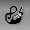
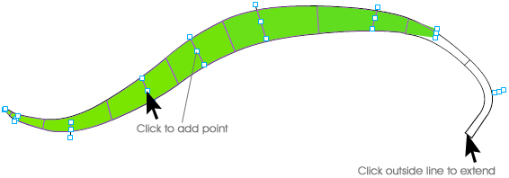
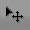
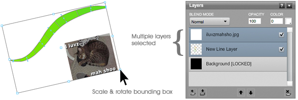
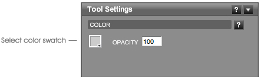
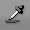
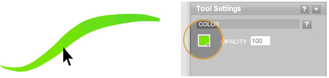

Online Documentation
Tools
 Brush Tool
The unique motion-enabled brush tool is the main drawing tool in Livebrush. It's a 'live brush' because it can change your line by responding to the speed of your gesture. Give it a try! It's much simpler than it sounds.
How the brush reacts and how it looks depends on the currently selected brush style. For example, one style may hide the line completely while showing only decorations. Another style may instruct the brush to wobble and bounce around your cursor.
We have the most fun with styles that instruct the brush to keep drawing after we've released the mouse. Just remember, you can always force a brush to finish drawing using the Control menu or using the shortcut CTRL+SHIFT+B.
Brush settings correspond to the selected style. Refer to the style section for details regarding these properties.
Note that you can customize a style to draw normally. In order to do so, simply set the brush style behavior to "Normal."
Pen Tool

The pen tool is mainly used to add points to a previously created line. Click any center control point on a line and another point will be placed right after the point you clicked. If you click outside the line the pen tool will extend the line.
Surrounding each point are two anchors. These points are used to adjust the angle and width of the line. By holding the control key, the center point can be moved without adding another point.
Note that you need to select a line layer to add points to a line.
 Transform Tool

The transform tool is used to transform layers or line points.
When using the transform tool, select one or more layers in the layers panel. A bounding box will then appear giving you the option to resize, rotate, or move your selection. By default, if this is a line layer, all the line points will be selected.
When resizing your selection, you can constrain its proportions by holding down the SHIFT key while dragging one of the control points of the bounding box.
You can rotate your selection by holding down the CTRL key while clicking one of the control points of the bounding box.
In order to move your selection, click anywhere inside the bounding box and drag it to another location on the canvas.
If only one line layer is selected, you can click on the canvas and drag to select and group multiple points of the line. If more than one point is selected, a bounding box will appear.
For precise transformations, use the tool properties panel. Note that the color settings on this panel only apply to selected line points. Use the color and opacity properties on the layers panel to change the color of an entire layer.
Bucket Tool

The bucket tool is used to create a solid color fill layer. Choose the color using the tool settings panel. You can change the color later using the color properties on the layers panel.
 Sample Tool

Using this tool, you can click anywhere on the canvas. This will sample the color directly below the mouse. The color will be accessible in the tool properties panel.